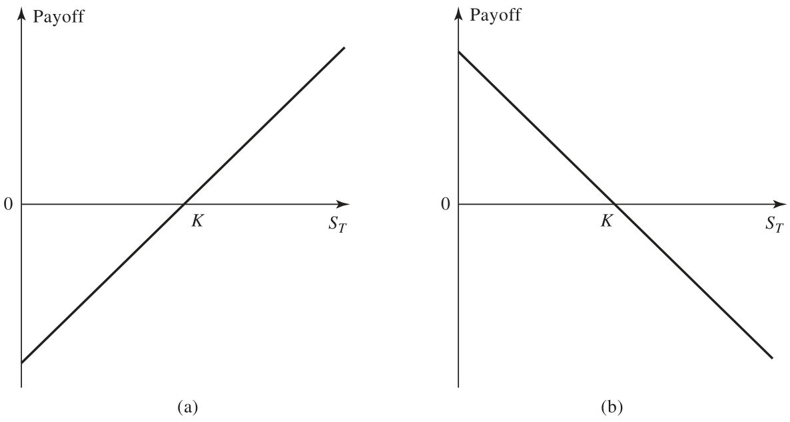
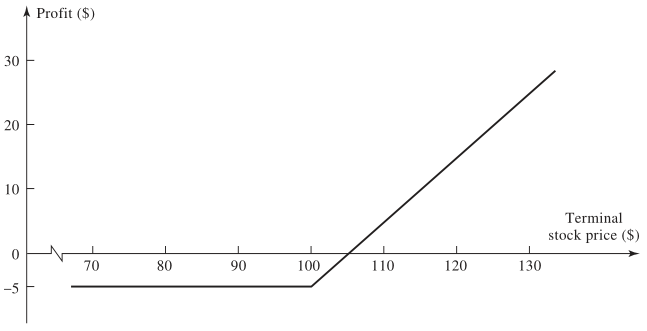
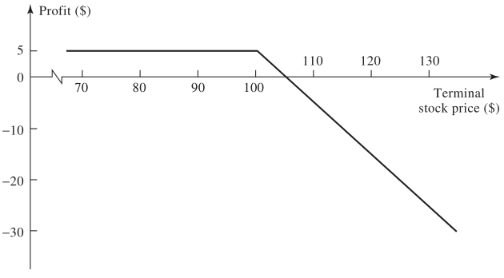
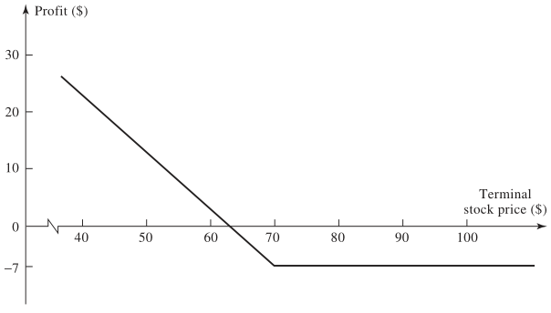
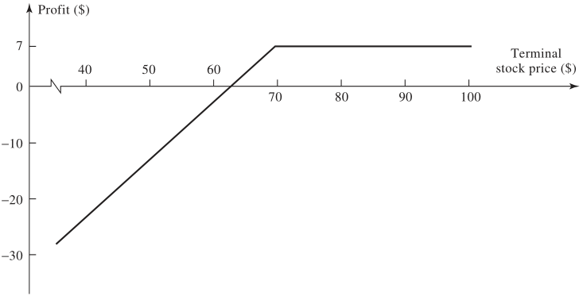

12 Úvod do finančních derivátů
Studijní materiály
- MELICHER, Ronald W. a Edgar NORTON. Introduction to finance: markets, investments, and financial management.
- HULL, John. 2018. Options, futures, and other derivatives. Ninth edition. Harlow: Pearson. ISBN 978-1-292-21289-0.
Výstupy z učení:
- Porozumět základnímu fungování finančních derivátů.
- Pochopit základní principy využití finančních derivátů.
- Rozlišovat forwardy, futures, opce a swapy.
- Získat dovednosti k identifikaci výhod a nevýhod využití derivátů.
- Naučit se činit informovaná investiční rozhodnutí a řídit rizika.
12.1 Charakteristika finančních derivátů
- Finanční derivát je nástroj, jehož hodnota je odvozena (derived from) od hodnoty jiného aktiva.
- Podkladovým aktivem mohou být například: akcie, směnné kurzy, úrokové sazby, komodity, atd.
- Specifikují parametry transakce, která proběhne v budoucnosti.
- Nepodmíněné kontrakty \(\rightarrow\) povinnost provést budoucí transakci (forwardy, futures, swapy)
- Podmíněné kontrakty \(\rightarrow\) držitel má právo rozhodnout, zda transakce bude provedena (opce)
12.1.1 Využití finančních derivátů
- Hedging (zajištění rizik)
- Cílem hedgingu je snížení rizika.
- Výsledkem nemusí být vyšší zisk.
- Forwardy a futures eliminují riziko tím, že fixují cenu.
- Opce poskytují jistou formu pojištění proti nepříznivé události (za poplatek).
- Spekulace
- Snaha vydělat na příznivém pohybu ceny podkladového aktiva.
- Arbitráž
- Snaha vydělat na rozdílu v cenách určitých aktiv.
12.1.2 Obchodování s finančními deriváty
- Burzovně obchodované deriváty
- Burza derivátů např. Chicago Board Options Exchange (CBOE)
- Kontrakty jsou standardizované (doba expirace, velikost kontraktu, podkladové aktivum, atd.)
- Clearing house je prostředníkem mezi poptávkou a nabídkou.
- Garantuje plnění podmínek protistranou (nízké kraditní riziko).
- Trhy jsou transparentní a podléhají přísnější regulaci.
- Mimoburzovní OTC deriváty
- Over-the-counter (OTC) trh.
- Velká regulace po roce 2008.
- Větší flexibilita kontraktů.
- Hojně využívají finanční instituce.
- Vyšší kreditní riziko.
12.1.3 Výhody a nevýhody derivátů
- Kritika derivátů: gambling, destabilizace trhu, přiliš komplexní produkty
- Výhody derivátů:
- Umožňují transfer rizik.
- Možnost vytvořit rizikově výnosový profil, který by jinak nebyl možný.
- Zlepšují efektivitu trhů (umožňují arbitráž).
- Nízké transakční náklady
12.2 Forwardy
- Povinnost koupit nebo prodat podkladové aktivum v předem sjednaný čas za předem dohodnutou cenu.
- Nejvíce používané k zajištění měnového rizika.
- Obchodují se na OTC trzích.
- Long pozice = závazek koupit podkladové aktivum
- Short pozice = závazek prodat podkladové aktivum
- Graf výplaty z long (a) a short (b) forwardu při splatnosti.
- \(K\) je předem sjednaná cena
- \(S_T\) je cena podkladového aktiva při splatnosti (v čase \(T\))

12.2.1 Jaká existuje přiležitost k arbitráži v následujících případech?
- Spotová cena zlata je USD 1 200, forward na zlato s maturitou 1 rok má cenu zlata 1300, bezriziková úroková sazba je 5% ročně.
- Spotová cena zlata je USD 1 200, forward na zlato s maturitou 1 rok má cenu zlata 1200, bezriziková úroková sazba je 5% ročně.
12.3 Futures
- *Povinnost koupit nebo prodat podkladové aktivum v předem sjednaný čas za předem dohodnutou cenu.
- Podobné forwardům.
- Burzovně obchodované, standardizované kontrakty.
12.3.1 Rozdíly mezi forwardy a futures
- Forwardy:
- Obchodované na OTC trhu.
- Omezená regulace, vyšší kreditní riziko.
- Vypořádání na konci doby splatnosti.
- Futures:
- Burzovně obchodované.
- Vyšší regulace, transparentnost.
- Nižší kreditní riziko (clearing house).
- Vypořádání průběžně každý den pomocí margin account.
12.4 Swapy
- Jedná se o několik stejných forwardů, které mají různé doby splatnosti.
- Používá se při hedgingu opakujících se pravidelných transakcí (např. úroky z půjčky placené čtvrtletně).
- Obchoduje se na OTC trhu.
- Využíván převážně finančními institucemi.
12.5 Opce
12.5.1 Call vs. Put
- Call opce (kupní opce) je právo koupit podkladové aktivum v předem sjednaný čas za předem dohodnutou cenu.
- Put opce (prodejní opce) je právo prodat podkladové aktivum v předem sjednaný čas za předem dohodnutou cenu.
12.5.2 Long vs. Short
- Long pozice označuje majitele opce. Má právo rozhodnout, zda bude opce uplatněna.
- Short pozice označuje protistranu, která prodává opci long pozici. Pokud je opce uplatněna, musí transakci uskutečnit.
12.5.3 Americká vs. Evropská opce
- Americká opce může být uplatněna kdykoliv během doby splatnosti.
- Evropská opce může být uplatněna pouze v den splatnosti.
12.5.4 Charakteristiky opce
- opční prémie (poplatek, který platí long pozice short pozici, cena opce)
- strike price (předem dohodnutá cena podkladového aktiva)
- doba expirace
- Evropská nebo Americká
- Call nebo put
- Long nebo short
12.5.5 Long call
- opční prémie 5, strike price 100 
12.5.6 Short call
- opční prémie 5, strike price 100 
12.5.7 Long put
- opční prémie 7, strike price 70 
12.5.8 Short put
- opční prémie 7, strike price 70 
12.5.9 Opční prémie
- Vnitřní hodnota hodnota opce pokud by byla okamžitě uplatněna.
- Časová hodnota rozdíl mezi opční prémií a vnitřní hodnotou opce.